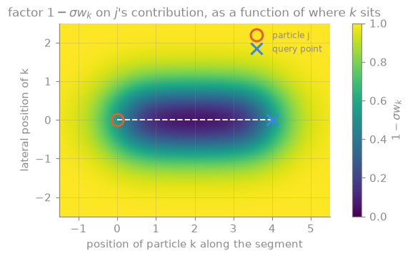
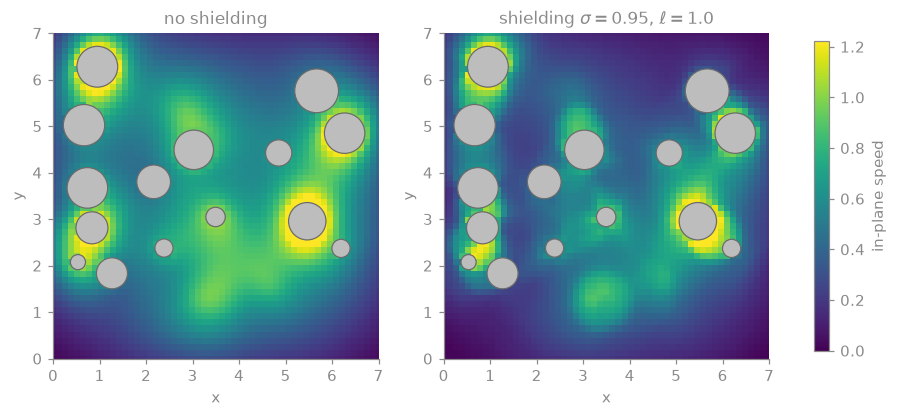
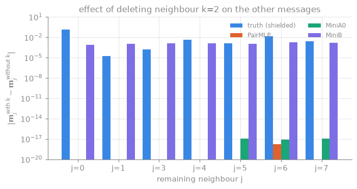
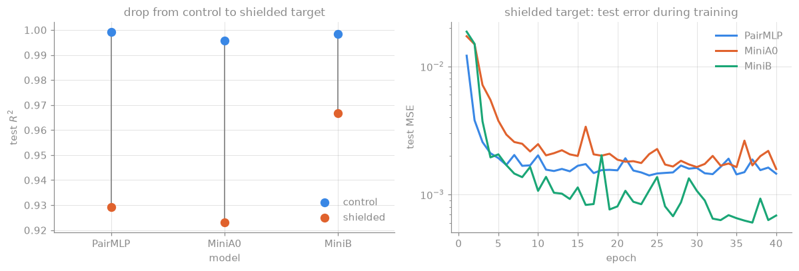
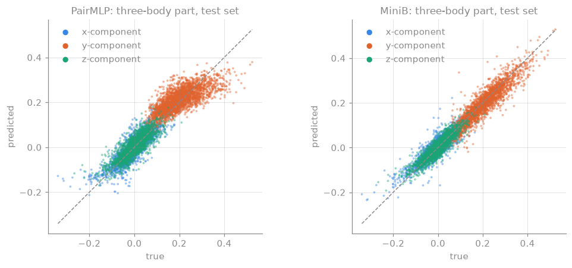
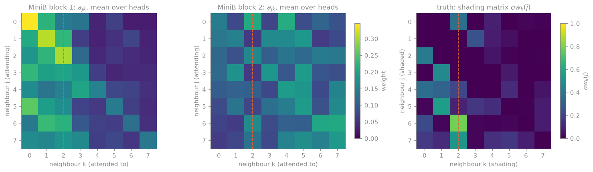

Shielding: why a sum of pairs falls short#
What you will learn
What a three-body effect is, using the toy’s “shielding” rule: a particle \(k\) between particle \(j\) and the query point weakens \(j\)’s contribution there.
Why no model of the form \(\sum_j \mathbf m(\text{pair } j)\) can represent it. A0 and the pairwise MLP both have this form, whatever their weights, and we check the reason numerically.
Attention in brief: queries, keys, values, the softmax weights, heads and the transformer block, enough to read model B.
How to see the limit in training: pairwise models plateau on a shielded target, while a small transformer (attention between neighbours) does much better.
That attention keeps every symmetry we care about (permutation of neighbours, rotations and reflections), checked to round-off.
Prerequisites: Lesson 02a (the inputs \(\mathbf x_{fj}\), \(\mathbf e_j\) and the scalars), Lesson 02b (A0’s two branches) and Lesson 02c (every message lies in \(\mathrm{span}(\mathbf x_{fj}, \mathbf e_j)\)). No transformer background is needed: Section 3 gives a compact introduction, and Lessons 05b to 05e take each piece further.
import copy, time
import numpy as np
import torch
import matplotlib.pyplot as plt
from course_utils import toy_data as T
from course_utils.plotting import PALETTE, INK, CMAP_SEQUENTIAL
from course_utils.models import PairMLP, MiniA0, MiniB, param_count
from course_utils.training import train, predict, split_by_snapshot
from course_utils.metrics import r2
from course_utils.equivariance import check_equivariance, check_permutation
from course_utils.shielding import (local_shielding_factor, shielding_weights,
shielded_contributions, shielded_target)
t_start = time.time()
torch.manual_seed(0)
torch.set_num_threads(4) # small models train fastest on a few threads; more threads only contend
1. A three-body effect: shielding#
Every model in Part II predicts the velocity at a query point \(\mathbf x_f\) as a sum of messages, one per neighbour \(j\):
where \(\boldsymbol\xi_j = (|\mathbf q_j|, \rho, \phi_j)\) collects neighbour \(j\)’s scalars (the code calls
them scalars). Message \(j\) sees the query point and particle \(j\), and nothing else. This is a
two-body (pairwise) model: query plus one particle. Given the particle states, the toy’s exact Stokes
disturbance is of this kind, so a pairwise model can represent it. (The states themselves are a many-body
quantity: Part III is about getting them right.)
Real suspensions are not that simple. The toy adds a made-up but symmetric rule, called shielding: when a particle \(k\) sits between particle \(j\) and the point \(\mathbf x_f\), it weakens how \(j\)’s disturbance reaches \(\mathbf x_f\). Particle \(j\)’s contribution is multiplied by a factor
where
\(t = \dfrac{(\mathbf r_k - \mathbf r_j)\cdot(\mathbf x_f - \mathbf r_j)}{|\mathbf x_f - \mathbf r_j|^2}\) says how far along the segment from \(j\) to \(\mathbf x_f\) particle \(k\) sits (between 0 and 1 means “in between”), and \(d_\perp\) is \(k\)’s distance from that line;
\(\mathrm{sig}(z) = 1/(1 + e^{-z})\) is the logistic function, so the two \(\mathrm{sig}\) factors form a soft window that is close to 1 for \(0 < t < 1\); \(\tau = 0.1\) sets how sharp its edges are;
\(\ell\) is the width of the “shadow” and \(\sigma \in [0, 1)\) is its strength.
The factor \(S_j\) depends on three points at once (the query \(\mathbf x_f\), particle \(j\) and particle \(k\)), so it is a three-body effect.
Occlusion, not hydrodynamics
This rule is line-of-sight occlusion, chosen for teaching. It is unrelated to the toy’s \(e^{-r/L}\) screening of each disturbance (Lesson 01b) and to Brinkman-type hydrodynamic screening. Real many-body effects in Stokes flow come from reflections between particles and from screening, not from one particle casting a shadow. What the rule shares with real physics is the one property this lesson needs: the effect of \(j\) at \(\mathbf x_f\) depends on where other particles are.
Let us draw \(1 - \sigma w_k\) for one pair: particle \(j\) at the origin, the query point at \((4, 0)\), and
particle \(k\) moved over the plane. local_shielding_factor takes the course’s network inputs, so we pass two
“neighbours” (\(j\) and \(k\)) per query, written as offsets from the query point.
sigma, width = 0.95, 1.0 # the shielding strength and width used in this lesson (tau = 0.1)
x_q = np.array([4.0, 0.0, 0.0]) # query point; particle j sits at the origin
g1, g2 = np.linspace(-1.5, 5.5, 141), np.linspace(-2.5, 2.5, 101)
K = np.stack(np.meshgrid(g1, g2), -1).reshape(-1, 2)
r_k = np.concatenate([K, np.zeros((len(K), 1))], 1) # particle k on the plane z = 0
x_fj = np.stack([np.broadcast_to(x_q, r_k.shape), x_q - r_k], 1) # (B, 2, 3): offsets of j and k
S = local_shielding_factor(torch.tensor(x_fj), sigma, width)[:, 0].numpy() # factor on j's term
fig, ax = plt.subplots(figsize=(7.2, 3.2))
im = ax.imshow(S.reshape(len(g2), len(g1)), origin="lower", extent=(g1[0], g1[-1], g2[0], g2[-1]),
cmap=CMAP_SEQUENTIAL, vmin=0, vmax=1)
ax.plot([0, x_q[0]], [0, 0], ls="--", color="#f2f2f2", lw=1.3) # light: visible inside the dark band
ax.plot(0, 0, "o", ms=11, mfc="none", mec=PALETTE[1], mew=2, label="particle j")
ax.plot(*x_q[:2], "x", ms=10, mew=2, color=PALETTE[0], label="query point")
ax.set_xlabel("position of particle k along the segment"), ax.set_ylabel("lateral position of k")
ax.set_title(r"factor $1-\sigma w_k$ on $j$'s contribution, as a function of where $k$ sits")
fig.colorbar(im, ax=ax, label=r"$1-\sigma w_k$")
ax.legend(loc="upper right", fontsize=8)
plt.show()

When \(k\) sits in the dark band around the dashed segment between \(j\) and the query point, it removes most of \(j\)’s contribution. Away from the segment it does nothing.
1.1 Shielding in the full toy#
make_snapshot(shielding=..., shield_width=...) applies the rule to the whole suspension, so every other
particle can shadow every disturbance. The flow changes visibly. In particular, regions behind dense groups
of particles become quieter.
snap_plain = T.make_snapshot(n_particles=64, box=7.0, seed=1)
snap_shield = T.make_snapshot(n_particles=64, box=7.0, seed=1, shielding=sigma, shield_width=width)
fig, axes = plt.subplots(1, 2, figsize=(10.5, 4.3))
_, _, v0 = cu.plotting.field_slice(snap_plain, ax=axes[0], n=55, colorbar=False, title="no shielding")
vmax = np.nanpercentile(np.hypot(v0[:, 0], v0[:, 1]), 99)
cu.plotting.field_slice(snap_shield, ax=axes[1], n=55, vmax=vmax, colorbar=False,
title=rf"shielding $\sigma={sigma}$, $\ell={width}$")
axes[0].images[0].set_clim(0, vmax)
fig.colorbar(axes[1].images[0], ax=axes, shrink=0.85, label="in-plane speed")
plt.show()

The full-toy field depends on particles beyond the \(M\) nearest, and also on the slip states. That mixes two questions: what a model can see, and what it can express. To isolate the second question, the rest of the lesson uses a neighbour-set target. The same rule is applied only among the \(M\) neighbours a model receives:
with \(G\) the screened one-sphere Stokes matrix of Lesson 01b and \(\mathbf s_j\) the slip of particle \(j\).
This target is a deterministic function of the model inputs, so any error that remains is a limit of the
model’s structure, not missing information. The helper course_utils.shielding.shielded_target computes it
from (scalars, e_j, x_fj). First we check that it is the toy’s rule, by comparing it with the NumPy
implementation in toy_data applied to the same \(M\) particles:
M = 8
snap_chk = T.make_snapshot(n_particles=40, box=6.0, seed=3)
pts = snap_chk.sample_exterior(10, rng=0)
inp = T.neighbour_inputs(pts, snap_chk.positions, snap_chk.slip, snap_chk.phi_local, snap_chk.density_ratio, M)
y_torch = shielded_target(inp["scalars"], inp["e_j"], inp["x_fj"], sigma, width).numpy()
err = 0.0
for p in range(len(pts)):
pos = snap_chk.positions[inp["idx"][p].numpy()]
S_np = T.shielding_factor(pts[p:p + 1], pos, sigma, width)[0]
G_np = T.stokes_sphere_matrix(pts[p] - pos, 0.5, snap_chk.config.screening_length)
ref = np.einsum("j,jab,jb->a", S_np, G_np, snap_chk.slip[inp["idx"][p].numpy()])
err = max(err, np.abs(ref - y_torch[p]).max())
print(f"neighbour-set target vs toy_data rule: max |difference| = {err:.2e}")
assert err < 1e-12
neighbour-set target vs toy_data rule: max |difference| = 1.11e-16
The target must have the same symmetries as the physics: it rotates and reflects with the inputs, and it does not depend on the order of the neighbours. Each neighbour’s contribution is permutation-equivariant: shuffle the neighbours and the contributions are shuffled the same way.
args64 = (inp["scalars"], inp["e_j"], inp["x_fj"])
kinds = ("scalar", "vector", "vector")
target_fn = lambda s, e, x: shielded_target(s, e, x, sigma, width)
contrib_fn = lambda s, e, x: shielded_contributions(s, e, x, sigma, width)
check_equivariance(target_fn, args64, kinds, name="shielded target, O(3)")
check_permutation(target_fn, args64, mode="invariant", name="shielded target, neighbour order")
check_permutation(contrib_fn, args64, mode="equivariant", name="per-neighbour contributions");
PASS shielded target, O(3): max error 3.3e-16 (tol 1e-12) [5 random g in O(3), det = [-1, 1]]
PASS shielded target, neighbour order: max error 2.2e-16 (tol 1e-12) [3 random permutations of axis 1 (invariant)]
PASS per-neighbour contributions: max error 1.1e-16 (tol 1e-12) [3 random permutations of axis 1 (equivariant)]
2. What goes wrong: a sum of pairs cannot let \(k\) change \(j\)#
Here is the whole argument. In a pairwise model, message \(j\) is a function of \((\boldsymbol\xi_j, \mathbf e_j, \mathbf x_{fj})\) only:
So deleting particle \(k\) removes \(\mathbf m_k\) from the sum and leaves every other message exactly as it was. In the shielded target, deleting \(k\) also restores the contributions \(k\) was shadowing. A pairwise model has no term that can do that. The best it can do is the closest sum of pair functions, which behaves roughly like an average attenuation for each pair geometry, averaged over all the places where other particles might be.
This holds for any weights, so we can check it on untrained models. We take one query point, pick the particle \(k\) whose removal changes the other contributions the most, and delete it.
def drop(inputs, k):
"""The same neighbour set with neighbour k removed (M - 1 neighbours)."""
keep = [i for i in range(inputs[0].shape[1]) if i != k]
return tuple(a[:, keep] for a in inputs)
def change_of_others(f, inputs, k):
"""max_j |c_j(with k) - c_j(without k)| over j != k, for per-neighbour outputs f -> (B, M, 3)."""
with torch.no_grad():
full = f(*inputs)
keep = [i for i in range(inputs[0].shape[1]) if i != k]
return (full[:, keep] - f(*drop(inputs, k))).norm(dim=-1)[0] # (M - 1,)
# choose the query point and neighbour k with the largest effect on the truth
best = (0.0, None, None)
for p in range(len(pts)):
one = tuple(a[p:p + 1] for a in args64)
for k in range(M):
d = change_of_others(contrib_fn, one, k).max().item()
if d > best[0]:
best = (d, p, k)
_, p_star, k_star = best
one = tuple(a[p_star:p_star + 1] for a in args64)
print(f"query point {p_star}, deleting its neighbour number {k_star}")
torch.manual_seed(0)
untrained = {"PairMLP": PairMLP(64, 3).double(), "MiniA0": MiniA0(64, 3).double(), "MiniB": MiniB(32, 2).double()}
rows = {"truth (shielded)": change_of_others(contrib_fn, one, k_star)}
for name, m in untrained.items():
rows[name] = change_of_others(m.messages, one, k_star)
for name, d in rows.items():
print(f"{name:<17} max over j != k of |change in message j| = {d.max().item():.2e}")
for name in ("PairMLP", "MiniA0"):
assert rows[name].max().item() < 1e-12, name
query point 2, deleting its neighbour number 2
truth (shielded) max over j != k of |change in message j| = 1.33e-01
PairMLP max over j != k of |change in message j| = 1.73e-18
MiniA0 max over j != k of |change in message j| = 1.10e-17
MiniB max over j != k of |change in message j| = 1.74e-03
The pairwise models’ messages do not move: the change is zero up to float64 round-off. Mathematically it
is exactly zero; the printed values are the last bits of floating-point arithmetic. The truth’s
contributions change by a finite amount. So does the transformer’s (MiniB, introduced in Section 3), even
untrained, because its message \(j\) is computed after neighbour \(j\) has attended to all the others. Per
neighbour:
others = [i for i in range(M) if i != k_star]
floor = 1e-20
fig, ax = plt.subplots(figsize=(7.0, 3.3))
wbar = 0.2
for c, (name, d) in enumerate(rows.items()):
ax.bar(np.arange(M - 1) + (c - 1.5) * wbar, d.numpy().clip(floor), wbar, color=PALETTE[c], label=name)
ax.set_yscale("log"), ax.set_ylim(floor, 1e1)
ax.set_xticks(range(M - 1), [f"j={i}" for i in others])
ax.set_xlabel("remaining neighbour j"), ax.set_ylabel(r"$|\mathbf{m}_j^{\rm with\ k} - \mathbf{m}_j^{\rm without\ k}|$")
ax.set_title(f"effect of deleting neighbour k={k_star} on the other messages")
ax.legend(fontsize=8, ncol=2, loc="upper right")
plt.show()

Note the logarithmic axis. The PairMLP and MiniA0 bars sit at float64 round-off, far below the truth’s changes and below the untrained transformer’s small but genuine ones. A change that is exactly zero cannot be drawn on a log axis, so it is clipped to the floor \(10^{-20}\) and its bar has no visible height. That is why some PairMLP and MiniA0 bars are missing: their change there is exactly zero.
Does this contradict Lesson 02c?
No. Lesson 02c showed that A0’s per-pair form is fully general: any O(3)-equivariant function of a single pair lies in \(\mathrm{span}(\mathbf x_{fj}, \mathbf e_j)\) with invariant coefficients. Shielding does not need a different per-pair form. In the target, \(S_j G(\mathbf x_{fj}) \mathbf s_j\) still lies in \(\mathrm{span}(\mathbf x_{fj}, \mathbf s_j)\), and so do the transformer’s messages (the next cell checks both). What shielding needs is coefficients that depend on the other neighbours. The limit is the sum of independent pairs, not the span.
from course_utils.equivariance import span_residual
s_vec = args64[0][..., :1] * args64[1] # s_j = |q_j| e_j
res_target = span_residual(contrib_fn(*args64), args64[2], s_vec).max().item()
res_B = span_residual(untrained["MiniB"].messages(*args64).detach(), args64[2], args64[1]).max().item()
print(f"shielded contributions: max distance from span(x_fj, s_j) = {res_target:.1e}")
print(f"MiniB messages: max distance from span(x_fj, e_j) = {res_B:.1e}")
assert res_target < 1e-12 and res_B < 1e-12
shielded contributions: max distance from span(x_fj, s_j) = 7.1e-16
MiniB messages: max distance from span(x_fj, e_j) = 8.4e-16
3. Attention in brief#
The cure is to let each neighbour’s coefficients depend on the other neighbours. Attention does this. This section gives the minimum needed to read model B; Lessons 05b to 05e build each piece from scratch.
Tokens. Treat the \(M\) neighbours as a set of \(M\) tokens. Token \(j\) carries a feature vector \(\mathbf h_j \in \mathbb R^{d}\), here a small MLP applied to neighbour \(j\)’s invariants \(I_j = (\boldsymbol\xi_j,\ r_j,\ \hat{\mathbf x}_{fj}\cdot\mathbf e_j,\ |\mathbf e_j|)\), where \(r_j = |\mathbf x_{fj}|\).
Queries, keys and values. Three learned linear maps give each token a query \(Q_j = W_Q \mathbf h_j\) (“what am I looking for?”), a key \(K_k = W_K \mathbf h_k\) (“what do I offer?”) and a value \(V_k = W_V \mathbf h_k\) (“what I pass on”). Each has \(d_h\) entries.
Weights and the update. Token \(j\) scores every token \(k\) with a dot product, turns the scores into weights with a softmax, and takes the weighted average of the values:
The weights in each row are positive and sum to 1, so \(\mathbf h_j'\) is an average of the values whose weights depend on the data. Dividing by \(\sqrt{d_h}\) keeps the scores of order 1 as \(d_h\) grows, so the softmax does not saturate. The term \(b_{jk}\) is an optional additive bias that lets known pair information steer the weights directly.
Heads. Several copies of this map (“heads”), each with its own \(W_Q, W_K, W_V\) and smaller \(d_h\), run side by side; their outputs are concatenated and mixed by one more linear map. Different heads can attend to different things. With padding (sets of different sizes), a mask sets the scores of missing tokens to \(-\infty\) before the softmax; we always have exactly \(M\) neighbours, so no mask is needed here.
The transformer block. Attention is wrapped in a residual block, with layer normalisation (LN, which rescales each token’s features to zero mean and unit variance) before each part:
where the MLP acts on each token separately. Stacking a few blocks lets information pass between neighbours more than once.
Why it suits sets. Nothing in the formulas uses the position of a token in the list: permuting the tokens permutes the queries, keys, values and weights the same way, so the outputs are permuted too (permutation-equivariant). A sum over tokens at the end is then permutation-invariant. Section 5 checks both.
Model B in one line. MiniB computes, for every pair \((j, k)\), the invariants
maps them through one small MLP to the biases \(b_{jk}\) of every block and head, runs two transformer blocks, and reads out two invariant coefficients per neighbour:
The learned parts see only norms and dot products, so \(\alpha_j, \beta_j\) are invariant and \(\mathbf u\) is
exactly O(3)-equivariant, with every message in \(\mathrm{span}(\mathbf x_{fj}, \mathbf e_j)\) as in A0.
The difference from A0 is that \(\alpha_j, \beta_j\) now depend on all the neighbours. \(P_{jk}\), together
with each token’s own invariants (which include \(r_j\)), carries what is needed to tell whether \(k\) sits
between \(j\) and the query point. MiniB is a reduced version of the research model B: it is narrower, its
MLPs are smaller and it feeds \(r_j\) in directly instead of through a radial-basis embedding.
Animation S5, attention and shielding. First act: a particle scores each neighbour by the projection of the neighbour’s key on its own query, \(\mathbf Q\cdot\mathbf K/\sqrt{d_h}\). A softmax turns the scores into positive weights that sum to 1, drawn as the brightness of the edges. The clip writes \(i\) for the token that looks and \(j\) for the token looked at, where Part V writes \(j\) and \(k\). Second act: neighbour B sits in the shadow of the closer neighbour A. In a plain sum (left, A0) every pair term has weight 1, whatever A does. In attention (right, model B) with scores alone, the ratio of B’s weight to C’s does not depend on A. A pair bias \(b(P_{BA})\), computed from the geometry of B and A, lowers that ratio, and removing A brings it back. Removing a token renormalises every weight, so the ratio, not B’s weight alone, is the evidence for shielding. The clip is drawn on a dark stage in both page themes. Explore the same toy in 3D: open the interactive version in a new tab, or show it here:
Interactive 3D version: shielding: attention versus a plain sum (toy)
4. The plateau in training#
Now we train. The data come from toy snapshots without full-toy shielding, using the oracle states \(\mathbf q_j = \mathbf s_j\) (the exact slip). The targets are replaced by the neighbour-set target with \(M = 8\), so the reference frame of the original velocities plays no role. Using oracle states removes a different source of error: the missing self-consistency that Part III addresses. What remains is only the three-body effect. We build two targets on the same inputs: \(\sigma = 0\) (a plain sum of pair terms, the control) and \(\sigma = 0.95\), \(\ell = 1\) (shielded). Four snapshots are used for training and two for testing, split by snapshot as in Lesson 04a.
snaps = T.make_snapshots(6, seed0=10)
data = T.make_dataset(snaps, n_points=1500, M=M, frame="backflow", state="true", seed=0) # frame unused: y is replaced
y_pairs = shielded_target(data["scalars"], data["e_j"], data["x_fj"], 0.0) # sigma = 0
y_shield = shielded_target(data["scalars"], data["e_j"], data["x_fj"], sigma, width) # sigma = 0.95
def as_task(y):
d = {k: data[k].float() for k in ("scalars", "e_j", "x_fj")}
d["y"], d["snapshot"] = y.float(), data["snapshot"]
return split_by_snapshot(d, [0, 1, 2, 3], [4, 5])
tasks = {"control": as_task(y_pairs), "shielded": as_task(y_shield)}
rel = (y_shield - y_pairs).norm() / y_pairs.norm()
print(f"{len(tasks['shielded'][0]['y'])} training rows, {len(tasks['shielded'][1]['y'])} test rows, M = {M}")
print(f"size of the three-body part |y_shield - y_pairs| / |y_pairs| = {rel:.2f}")
6000 training rows, 3000 test rows, M = 8
size of the three-body part |y_shield - y_pairs| / |y_pairs| = 0.37
Three models, all exactly O(3)-equivariant and all with output \(\sum_j a_j \mathbf x_{fj} + b_j \mathbf e_j\):
PairMLP: an MLP on each pair’s invariants \(I_j\). This is the pairwise model “A”.MiniA0: the A0 architecture of Part II.MiniB: the transformer of Section 3. Lesson 05f builds it piece by piece.
All three get the same recipe: Adam at learning rate \(10^{-3}\), 40 epochs, batches of 64. The test set is
passed as val only to log its error after each epoch, for the learning curves; it is never used to pick a
model or stop training.
recipes = {"PairMLP": lambda: PairMLP(64, 3), "MiniA0": lambda: MiniA0(64, 3), "MiniB": lambda: MiniB(32, 2)}
LR, EPOCHS = 1e-3, 40
for name, make in recipes.items():
print(f"{name:<8} {param_count(make()):>6} parameters")
results, histories, trained = {}, {}, {}
for task, (tr, te) in tasks.items():
for name, make in recipes.items():
torch.manual_seed(0)
model = make()
t0 = time.time()
hist = train(model, tr, epochs=EPOCHS, lr=LR, batch=64, seed=0, val=te, verbose=False)
pred = predict(model, te)
results[(task, name)] = r2(pred, te["y"])
histories[(task, name)], trained[(task, name)] = hist, model
print(f"{task:<9} {name:<8} test R^2 = {results[(task, name)]:.4f} ({time.time() - t0:.0f} s)")
PairMLP 8898 parameters
MiniA0 17152 parameters
MiniB 18730 parameters
control PairMLP test R^2 = 0.9993 (3 s)
control MiniA0 test R^2 = 0.9958 (11 s)
control MiniB test R^2 = 0.9985 (10 s)
shielded PairMLP test R^2 = 0.9292 (2 s)
shielded MiniA0 test R^2 = 0.9230 (11 s)
shielded MiniB test R^2 = 0.9667 (10 s)

The left panel is a dot plot, not a bar chart, because only the differences matter: read the length of each model’s line, from its control score (blue) down to its shielded score (orange).
Control. On the sum-of-pairs target every model fits well. PairMLP is not weak: its structure matches the target. MiniA0 sits a little lower on the control, probably because its scalar branch never sees the distance \(|\mathbf x_{fj}|\) (only the vector branch does). That gap is small next to the drops on the shielded target.
Shielded. PairMLP and MiniA0 drop by about the same amount, much more than MiniB. Both sit at the same ceiling, the best a sum of pairs can do, and A0’s two-branch design does not change that. After the first few epochs their test error levels off, while MiniB’s keeps falling. Training three times longer barely moves the pairwise scores (we checked when writing this lesson), and more width does not close the gap either (Exercise 2): the missing term is not something a sum of pairs can express.
Rerunning with other seeds moves each shielded score by about a hundredth or less; the gap between the pairwise models and MiniB stays.
A sharper way to see it is to score only the part of the target that is three-body, \(\Delta = \mathbf y_{\text{shield}} - \mathbf y_{\text{pairs}}\), which the toy lets us compute exactly. A pairwise model can capture only the part of \(\Delta\) that is itself close to a sum of pair terms.
for name in names:
drop_ = results[("control", name)] - results[("shielded", name)]
print(f"{name:<8} control {results[('control', name)]:.4f} shielded {results[('shielded', name)]:.4f} drop {drop_:.4f}")
PairMLP control 0.9993 shielded 0.9292 drop 0.0701
MiniA0 control 0.9958 shielded 0.9230 drop 0.0728
MiniB control 0.9985 shielded 0.9667 drop 0.0318
tr, te = tasks["shielded"]
test_rows = data["snapshot"] >= 4
dy = (y_shield - y_pairs)[test_rows].float()
y0 = y_pairs[test_rows].float()
for name in names:
pred = predict(trained[("shielded", name)], te)
print(f"{name:<8} R^2 on the three-body part only: {r2(pred - y0, dy):.3f}")
PairMLP R^2 on the three-body part only: 0.592
MiniA0 R^2 on the three-body part only: 0.556
MiniB R^2 on the three-body part only: 0.808

5. What the transformer learned, and its symmetries#
Back to the query point and neighbour \(k\) from Section 2. After a forward pass, attention_weights()
returns each block’s weights \(a_{jk}\), with shape (batch, heads, M, M). Row \(j\) shows how much neighbour
\(j\) draws on each neighbour \(k\). Next to them we draw the true shading matrix \(\sigma w_k(j)\) for the
same query point, in the same layout: row \(j\), column \(k\) says how strongly \(k\) shades \(j\)’s contribution.
mB = trained[("shielded", "MiniB")]
one32 = tuple(a.float() for a in one)
with torch.no_grad():
mB(*one32)
W = [w[0].mean(0) for w in mB.attention_weights()] # head-averaged, one (M, M) matrix per block
shade = sigma * shielding_weights(one[2], width)[0] # (M, M): row j, column k
fig, axes = plt.subplots(1, 3, figsize=(14, 4.0))
labels = [str(i) for i in range(M)]
wmax = max(w.max().item() for w in W) # one colour scale for both blocks
for l, ax in enumerate(axes[:2]):
cu.plotting.attention_heatmap(W[l], ax=ax, labels=labels, vmax=wmax, colorbar=(l == 1),
xlabel="neighbour k (attended to)", ylabel="neighbour j (attending)",
title=f"MiniB block {l + 1}: $a_{{jk}}$, mean over heads")
cu.plotting.attention_heatmap(shade, ax=axes[2], labels=labels, vmax=1.0,
xlabel="neighbour k (shading)", ylabel="neighbour j (shaded)",
cbar_label=r"$\sigma w_k(j)$", title=r"truth: shading matrix $\sigma w_k(j)$")
for ax in axes:
ax.axvline(k_star, color=PALETTE[1], lw=1.2, ls="--")
plt.tight_layout()
plt.show()

The dashed line marks column \(k\), the neighbour deleted in Section 2. In the right panel that column shows whom \(k\) shades. The two attention panels share one colour scale. Attention weights do not explain a model, and they need not copy the shading matrix: the network can route the information through values, several heads and two blocks. We should not read too much into one query point either. The point is the mechanism: every neighbour’s representation now depends on the others, through weights built from pair geometry. That is the term a sum of pairs lacks.
5.1 Attention keeps the symmetries#
Adding interactions between neighbours must not break what Part II worked for. Three checks, in float64 on copies of the trained models:
Neighbour order. All three models are permutation-invariant. MiniB’s per-neighbour messages are also permutation-equivariant: attention mixes tokens, but it does not care which slot a token arrives in.
Rotations and reflections. MiniB is O(3)-equivariant. Its learned parts see only norms and dot products, and the output is built from \(\mathbf x_{fj}\) and \(\mathbf e_j\).
The attention block on its own (
course_utils.attention.TransformerBlock) is permutation-equivariant over tokens, with and without an additive pair bias that is permuted along with the tokens.
test64 = tuple(te[k][:64].double() for k in ("scalars", "e_j", "x_fj"))
models64 = {name: copy.deepcopy(trained[("shielded", name)]).double().eval() for name in names}
for name, m in models64.items():
check_permutation(m, test64, mode="invariant", name=f"{name}: neighbour order (invariant)")
check_permutation(models64["MiniB"].messages, test64, mode="equivariant", name="MiniB messages (equivariant)")
for name, m in models64.items():
check_equivariance(m, test64, kinds, name=f"{name}: O(3)")
PASS PairMLP: neighbour order (invariant): max error 1.1e-16 (tol 1e-12) [3 random permutations of axis 1 (invariant)]
PASS MiniA0: neighbour order (invariant): max error 2.2e-16 (tol 1e-12) [3 random permutations of axis 1 (invariant)]
PASS MiniB: neighbour order (invariant): max error 4.4e-16 (tol 1e-12) [3 random permutations of axis 1 (invariant)]
PASS MiniB messages (equivariant): max error 4.4e-16 (tol 1e-12) [3 random permutations of axis 1 (equivariant)]
PASS PairMLP: O(3): max error 4.4e-16 (tol 1e-12) [5 random g in O(3), det = [-1, 1]]
PASS MiniA0: O(3): max error 1.8e-15 (tol 1e-12) [5 random g in O(3), det = [-1, 1]]
PASS MiniB: O(3): max error 6.1e-16 (tol 1e-12) [5 random g in O(3), det = [-1, 1]]
from course_utils.attention import TransformerBlock
torch.manual_seed(1)
block = TransformerBlock(width=16, heads=4).double().eval()
h = torch.randn(5, M, 16, dtype=torch.float64) # 5 sets of M tokens
bias = torch.randn(5, 4, M, M, dtype=torch.float64) # one pair bias per head
check_permutation(lambda t: block(t), (h,), mode="equivariant", name="transformer block (no bias)")
def block_with_bias(t, b):
# b is stored (B, M, M, H) so that permuting axis 1 and 2 together permutes the pairs
return block(t, bias=b.permute(0, 3, 1, 2))
# check_permutation permutes axis 1 of every argument; permute axis 2 of the bias ourselves
gen = torch.Generator().manual_seed(0)
worst = 0.0
with torch.no_grad():
b4 = bias.permute(0, 2, 3, 1) # (B, M, M, H)
out = block_with_bias(h, b4)
for _ in range(3):
p = torch.randperm(M, generator=gen)
out_p = block_with_bias(h[:, p], b4[:, p][:, :, p])
worst = max(worst, (out_p - out[:, p]).abs().max().item())
print(cu.equivariance.report("transformer block with pair bias", worst, 1e-12, "3 random permutations of tokens and pairs"))
assert worst < 1e-12
PASS transformer block (no bias): max error 2.9e-16 (tol 1e-12) [3 random permutations of axis 1 (equivariant)]
PASS transformer block with pair bias: max error 6.7e-16 (tol 1e-12) [3 random permutations of tokens and pairs]
All errors are at round-off level. Attention adds what the sum lacked, an interaction between neighbours, without giving up any symmetry.
5.2 Where this leaves A0#
Nothing here says A0 is a bad model. With the same training as PairMLP, it reaches the same ceiling on the shielded target: its weakness there is the sum-of-pairs structure it shares with every pairwise model. In the research, the targets came from particle-resolved simulations of settling particles provided by collaborators, and real wakes and near-field interactions are not pairwise either. That is why model B was tried. The qualitative lesson carries over: a sum of independent pairs cannot represent a neighbour that changes another neighbour’s influence. Attention between neighbours can. Part III’s refinement attacks a different gap, the particle states, and Lesson 05g asks what refinement still adds once a model captures interactions.
Summary#
A pairwise model predicts \(\mathbf u(\mathbf x_f) = \sum_j \mathbf m(\boldsymbol\xi_j, \mathbf e_j, \mathbf x_{fj})\). A0 and
PairMLPboth have this form, whatever their weights.Shielding (particle \(k\) between \(j\) and the query point weakens \(j\)’s contribution) is a three-body effect. The toy implements it with distances and dot products only, so it keeps every symmetry. It is an occlusion rule for teaching, not hydrodynamic screening.
In a pairwise model, deleting neighbour \(k\) leaves every other message exactly unchanged. We checked this to round-off. The truth changes, so no choice of weights can fit it.
Attention replaces each token by a data-dependent weighted average of value vectors, with weights \(\mathrm{softmax}_k(Q_j\cdot K_k/\sqrt{d_h} + b_{jk})\). Wrapped in residual blocks with layer norm and a per-token MLP, it lets each neighbour’s coefficients depend on all the others.
With the same training recipe, PairMLP and MiniA0 fit the sum-of-pairs control but plateau at the same level on the shielded target, and do worst on the three-body part. A small transformer drops far less.
Attention with a pair-geometry bias stays permutation-invariant (equivariant per neighbour) and O(3)-equivariant, verified at round-off.
Exercises#
Trained models still cannot do it. Repeat the deletion test of Section 2 on the trained PairMLP and MiniA0 from
trained[("shielded", ...)]. Predict the result before running it.More capacity is not the cure. Train
PairMLP(128, 4)on the shielded task with the main recipe. Does its test \(R^2\) approach MiniB’s? Then train it on the \(\sigma = 0\) control and compare again.A wider shadow. Rebuild the shielded target with \(\ell = 1.5\) (keep \(\sigma = 0.95\)) and retrain PairMLP and MiniB. How do the two scores and the gap between them change, and why?
Solution 1
for name in ("PairMLP", "MiniA0"):
m = copy.deepcopy(trained[("shielded", name)]).double()
print(name, change_of_others(m.messages, one, k_star).max().item()) # round-off, ~1e-17
The change is zero again, up to round-off. Training changes the function \(\mathbf m\), but each message is still a function of one pair, so deleting \(k\) cannot change \(\mathbf m_j\) for \(j \neq k\). The argument in Section 2 is about the form of the model, not its weights.
Solution 2
for task in ("shielded", "control"):
tr, te = tasks[task]
torch.manual_seed(0)
big = PairMLP(128, 4)
train(big, tr, epochs=EPOCHS, lr=LR, batch=64, seed=0, val=te, verbose=False)
print(f"{task:<9} big PairMLP {r2(predict(big, te), te['y']):.4f} MiniB {results[(task, 'MiniB')]:.4f}")
On the shielded task the bigger model scores about the same as the small one and stays clearly below MiniB. The small model was already close to the best sum of pair functions, which acts roughly like an average attenuation for each pair geometry. On the \(\sigma = 0\) control the target is exactly a sum of pairs, and the pairwise models are as good as MiniB. The gap in the shielded case comes from structure, not size.
Solution 3
y_wide = shielded_target(data["scalars"], data["e_j"], data["x_fj"], sigma, 1.5)
tr, te = as_task(y_wide)
for name in ("PairMLP", "MiniB"):
torch.manual_seed(0)
m = recipes[name]()
train(m, tr, epochs=EPOCHS, lr=LR, batch=64, seed=0, verbose=False)
print(name, r2(predict(m, te), te["y"]))
A wider shadow means more neighbours shade each contribution, so the three-body part becomes a larger fraction of the target. Both scores drop because the target is harder. PairMLP drops more, because a larger share of the target is something it cannot express. MiniB keeps a clear lead.
References#
MolSSI e3nn course [The Molecular Sciences Software Institute (MolSSI), 2024], for equivariance and irreps: https://molssi-ai.github.io/e3nn-course/book/intro.html.
Attention and the transformer block: [Vaswani et al., 2017].
Sum aggregation over sets (Deep Sets) and attention over sets (Set Transformer): [Zaheer et al., 2017], [Lee et al., 2019].
Equivariant message passing that also mixes neighbours through many-body terms: [Satorras et al., 2021], [Batatia et al., 2022].
Hydrodynamic interactions in suspensions, the physics the toy only caricatures: [Happel and Brenner, 1983], [Guazzelli and Morris, 2011].